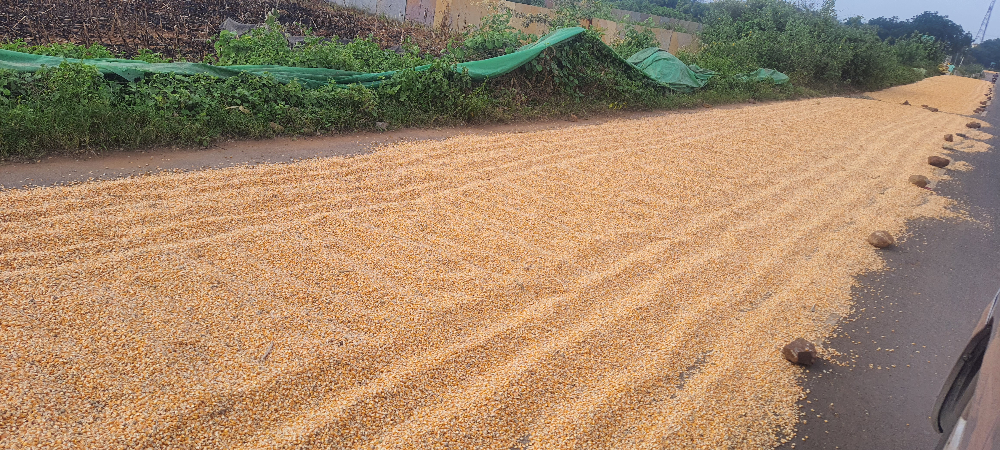
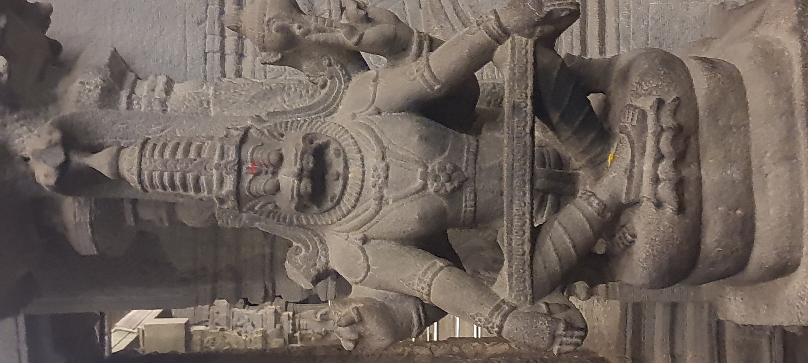
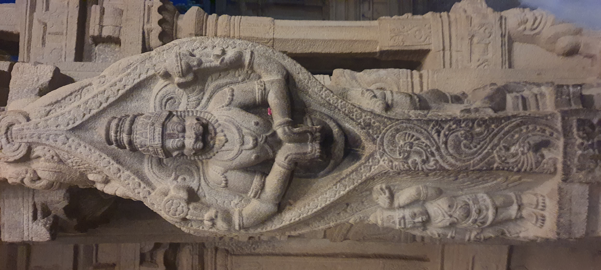
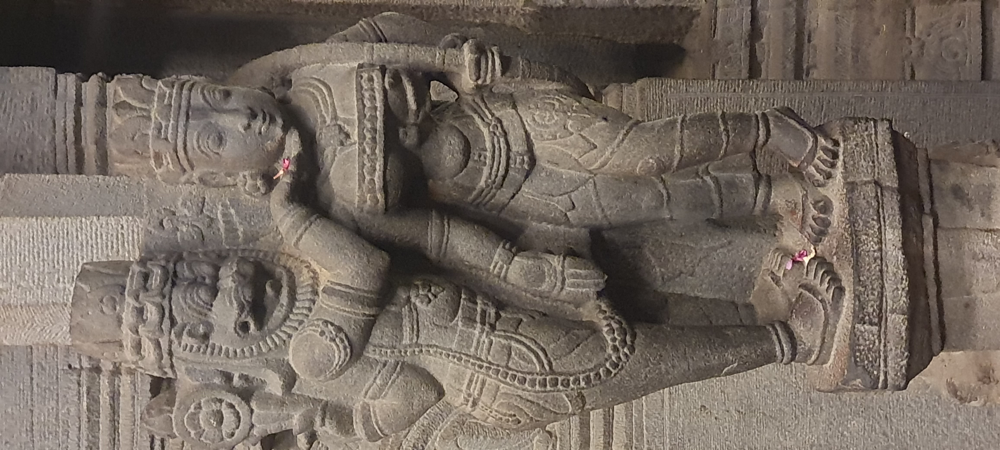
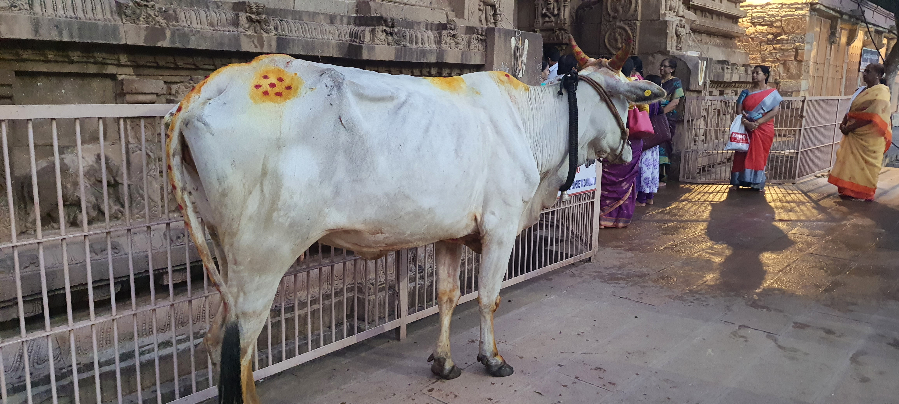
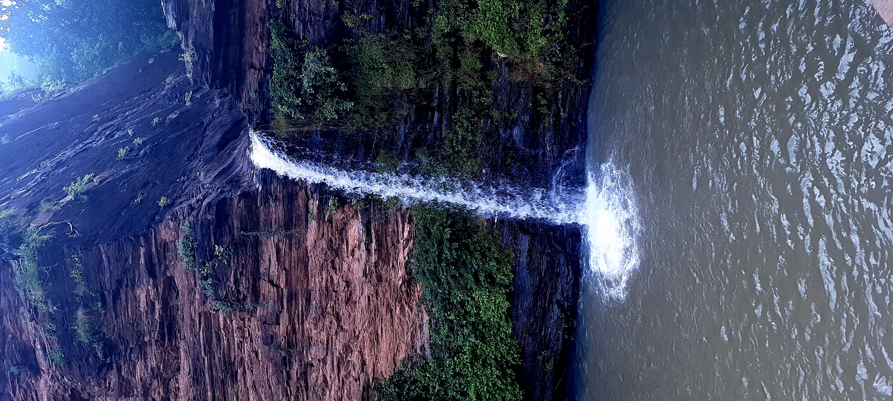
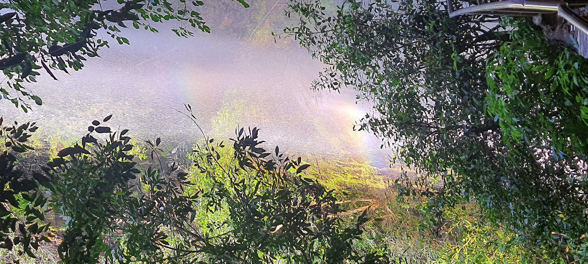
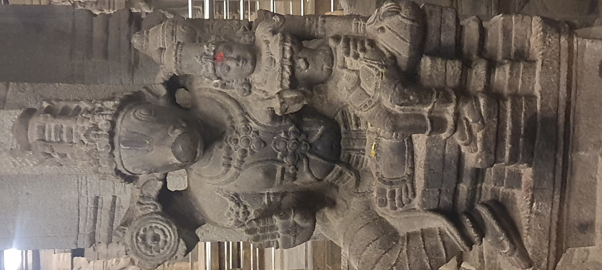
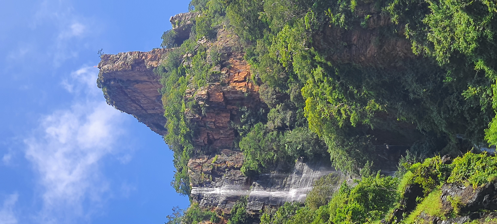

मित्राभ्यां भार्यया च सह चालकयुक्तेन भाटकवाहनेन गतसोमवासरे
प्रातःकाले बॆङ्गलूरुनगरादारभ्य सायंकाले अहोबिलं प्राप्तम्
अस्माभिः नवनृसिंहदर्शनाय । उपाहोबिलं कृषकैरर्धमार्गमाक्रम्य
तन्मध्ये यवधान्यानि विकीर्णानि शोषणार्थं । तस्माद्वाहनस्य
गतिर्मन्दा अभवत् ।

यवधान्यानि मार्गे शोष्यमाणानि
कृषकैरस्माकमुत्साहं दृष्ट्वास्मभ्यं कानिचन धान्यानि दत्तानि
। तानि प्राप्य अहोबिलद्वारे प्रवेशशुल्कं दत्त्वा नगरं
प्रविश्य तत्र पूर्वनिश्चितेन नियमेन मार्गदर्शकं कृष्णममिलाम
। सायंसन्ध्या अभवत् । नवनृसिंहेषु द्वौ समीपस्थौ देवालयौ
त्वरया गच्छाम इत्युक्त्वा तेन वयं देवालयौ प्राप्यामहि ।

योगनृसिंहः - स्तम्भशिल्पम्
दक्षिणहस्ते तालमुद्रां वामहस्ते अभयमुद्रां च धारयन्तं
छत्रवटनृसिंहं सङ्गीतप्रियं देवं दृष्ट्वा काचन भक्ता मधुरया
वाण्या सहसागायत् । शान्तमुखो योगानन्दनृसिंहो योगं साधयति ।
समीपे नवग्रहायतनं वर्तते । तत्र एकैकस्य ग्रहस्य नवनृसिंहेषु
एकतम नृसिंहोऽधिपतिरूपेण राजते ।
रात्रिस्सञ्जाता । कृष्णेन नरहरिवासगृहे संरक्षितकोष्ठं
प्राप्य हस्तं प्रक्षाल्य वयं कृष्णमनुसृत्य नगरमध्यस्थं
लक्षमीनृसिंहदेवालयमगच्छाम । यद्यपि विशालोऽयं देवालयः तथापि
नवस्थलेषु न गण्यते । यतो वैष्णवाळ्वारैः विरचिते
दिव्यप्रबन्धे पूर्वोक्तानि नवस्थलानि एव लभ्यन्ते ।
अर्चकाः वाद्येन नैवेद्येन च सह प्रह्लादवरदं
लक्षमीनृसिंहमाराधयन्ति भक्तान् तोषयन्ति च । प्रसादे प्राप्ते
अनेके वानराः प्रसादकणकामिनः प्रादुरभवन् । वानरेषु केचन
साधवोऽन्ये धीराः । साधवो दूरात् पतितस्य प्रसादकणस्य
प्रतीक्षमाणाः । धीराः समीपमागत्य नयनाभ्यां हस्ताभ्यां च
प्रगल्भमभिक्षन्त ।
भिक्षमाणान् वानरान् अवलोक्य केचित् जना भयाद् वा अनुकम्पया वा
तेभ्यः प्रसादमयच्छन् । देवालये अनेकेषु स्तंभेषु नृसिंहस्य
वृत्तान्तशिल्पानि कल्पितानि । तेषु नरसिंहचेञ्चुपरिणयः
स्तंभजश्च मह्यम् रोचेते । मध्यगगनस्थः कृष्णाष्टमीन्दुः
दक्षिणे गुरुणा वामे पुनर्वसुभ्यां सह मेघान् तीर्त्वा स्वस्य
चन्द्रिकया अस्मिन् प्रह्लादक्षेत्रे अस्मान् आह्लादयति
निद्रां च प्रयच्छति ।

स्तम्भजनृसिंहः - देवालयस्तम्भशिल्पम्

नरसिंहचेञ्चुपरिणयः

पुष्पकुम्कुमघणटादिभिः अलङ्कृता श्वेतधेनुः

उन्नतोहोबिलजलपातः
संध्यां निवार्य भानुरुदितवान् । बुभुक्षवो वयं
गुरुराघवेन्द्रो नाम भोजनालये अल्पोष्णाहारं भक्षित्वा
सप्तमानस्थं उन्नतोहोबिलं वाहनेन अर्धमुहूर्तेन प्राप्ताः ।
वनमुखं गिरिपादञ्च क्षेत्रमिदम् । लोकभाषायां नल्लमल नाम
वनमिदं कृष्णगिरिरित्यर्थं धारयति । तत्रस्थो जलपातो जनानां
स्वागताय इव भाति ।
पादाभ्यामीषदारुह्य उग्रनृसिंहायतनं दर्शितमस्माभिः ।
जलधारायाः मधुरान्ध्वनीन्निशम्य मार्गदर्शकस्य कृष्णस्य
नेतृत्वेन भवनाशिनीनद्यां प्रवेष्टुमग्रे सरामः । यद्यपि
नद्याः प्रवाहो गभीरता च न्यूना तस्याः समतलाभावात् पदे पदे
अप्रमादेन चलितव्यमिति उपदिश्य कृष्णेन एकैकस्य हस्ते दृढचलदड
एको दत्तः ।
नदीतले उपपादम् कालक्रमेण जलप्रवाहेण नानविधवर्णघृष्टप्रस्तराः
अमलचञ्चलसलिले स्फटिका इव प्रभान्ति । तद्विहाय लघुमत्स्याः
पादौ अल्पाल्पं दशन्ति । धट्यानन्तरं नदीं तीर्त्वा सोपानमूलं
प्राप्तम् । पञ्चशतम् सोपानानि स्युरिति ज्ञात्वा शनैः शनैः
वृक्षाच्छादितं तं मार्गं आरुह्य उत्तरस्थलं प्राप्तवन्तः ।

भवनाशिनी नदी जलपातश्च - सूर्यप्रकाशे इन्द्रधनुः
तत्र इतोपि उन्नतस्थलात् अवतरतो भवनाशिन्या जलपातस्य जलकणाः
सत्वरं श्रान्तत्वमनश्यन् । अयं मार्गो जलपातस्य
पृष्ठभागमनुसृत्य ज्वालानृसिंहगुहां प्रापयति । अस्या गुहायाः
निकटे रक्तकुण्डे नृसिंहेन हस्तौ प्रक्षालितौ
हिरण्यकशिपोर्वधानन्तरमिति जनानां मतम् ।
मेरुवदत्युन्नत उग्रस्तम्भोऽस्माद्बिलाद्दृश्यते । तस्मात्
स्तम्भादेव नरहरि स्तम्भसम्भवो जातो राक्षसवधाय । ये युवका
बलवन्तो वा ते उग्रस्तम्भमारोहन्ति । अवरोहन्तो वयम् मार्गे
क्रोडमालोलौ नृसिंहौ नमस्कृत्य गिरिपादं आप्य वाहनेन
हनुमतप्रार्थनाजातं कोदण्डपाणिं करञ्जनृसिंहं प्राप्नुमः।

क्रोडनृसिंहः - देवालयस्तम्भशिल्पम्

उग्रस्तम्भजलपातश्च - नल्लमलवनम्
अत्रस्थेन अर्चकेन तिरुमङ्गैयाऴ्वारविरचितानि पेरियतिरुमोळ्याः
नृसिंहपद्यानि गीयन्ते। यथा
கவ்வுநாயும்கழுகும்உச்சிபோதொடுகால்சுழன்று *
தெய்வமல்லால்செல்லவொண்ணாச் சிங்கவேள்குன்றமே.
कव्वुम् नायुम् कॴुगुम् * उच्चिप्पोदॊडु काल् सुऴण्ड्रु
तॆय्वम् अल्लाल् सॆल्ल ऒण्णाच् * चिङ्गवेळ्गुण्ड्रमे
चिङ्गवेळ्गुण्ड्रम् नाम *सिंहशासितगिरि - अहोबिलम् ।
अत्र सारमेयगृध्रसूर्यतापचक्रवाताश्च विद्यन्ते
अतो देवप्रियान् विहाय न केऽपि चिङ्गवेळ्गुण्ड्रम् गच्छेयुः । मूलम
தெய்வமல்லால்செல்லவொண்ணாச் சிங்கவேள்குன்றமே.
कव्वुम् नायुम् कॴुगुम् * उच्चिप्पोदॊडु काल् सुऴण्ड्रु
तॆय्वम् अल्लाल् सॆल्ल ऒण्णाच् * चिङ्गवेळ्गुण्ड्रमे
चिङ्गवेळ्गुण्ड्रम् नाम *सिंहशासितगिरि - अहोबिलम् ।
अत्र सारमेयगृध्रसूर्यतापचक्रवाताश्च विद्यन्ते
अतो देवप्रियान् विहाय न केऽपि चिङ्गवेळ्गुण्ड्रम् गच्छेयुः । मूलम
अर्चकस्य प्रवचनेन क्षेत्रभक्तकाव्यमहिमानं प्रबोधन्तो वयं
नवनृसिंहेषु सप्त दृष्टवन्तः । अस्माभिर्वनस्य अन्तर्भागे
विरलमार्गेन उग्रकम्पेन जीर्णवाहनेन मुहूर्तद्वयेन
पावनृसिंहोऽगम्यत । घोरवृष्ट्या मार्गो वा तडागो वा नाजानीमहि
। कुशलचालकेन मुहुर्मुहुर्जलाशयं प्रविश्य कथञ्चित् पावनं
पुनश्च वनद्वारमपि प्रापिते ।
पुरा पादाभ्यामेव इदं स्थलं लब्धम् । अन्तिमे सरलतरवनमार्गेन
नवमो भार्गवः प्राप्तो दर्शितश्च। गगने प्रतीच्यां
सायंसन्धयामकुर्वन् शोभनस्सूर्योऽस्माकं गृहं गच्छतेति वदतीव
श्रुत्वा वयं वनात् बहिरागत्य प्रह्लादवरदस्य शयनसेवां अवलोक्य
तृप्ताः सुप्तवन्तः ।